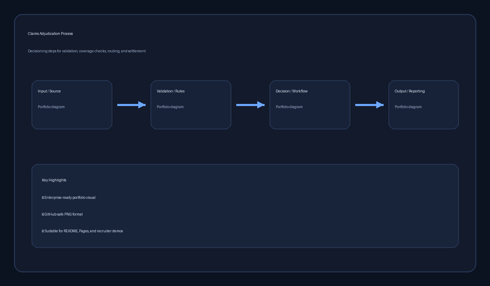

AI Requirements Builder Flow

Click image to view full resolution
Stakeholder inputs are transformed into BRDs, user stories, risks, dependencies, and UAT-ready artifacts.
FHIR Integration Overview

Click image to view full resolution
FHIR/API layer connects upstream clinical and provider systems with claims automation and downstream analytics.
Sample AI-Generated Outputs
Business Need
Automate completeness validation at intake to reduce manual review time and prevent downstream rework.
User Story
As a claims processor, I want incomplete claims to be auto-flagged at intake so that manual review time is reduced.
Acceptance Criteria
Missing member ID or provider ID blocks adjudication, triggers exception queue routing, and logs the reason in the audit trail.
Delivery Controls
Dependency Suggestions
Provider portal quality controls, eligibility API response validation, rules governance, and queue ownership readiness.
Risk Suggestions
Higher exception volume during rollout, training needs, and false positives in incomplete-claim detection.
UAT Scenario
When a claim is submitted without provider ID, the system blocks adjudication, assigns exception category, and notifies the queue owner.